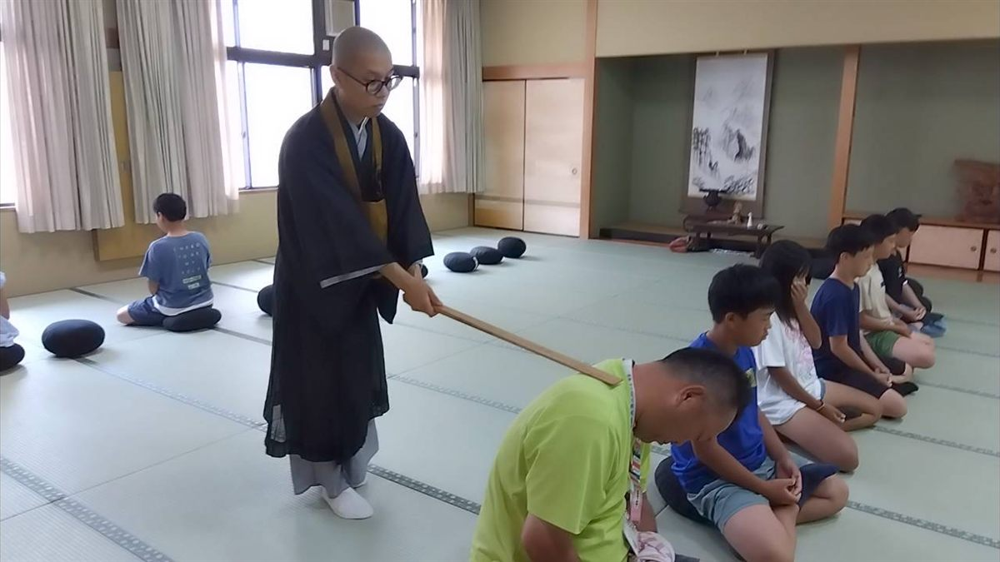

ご依頼・ご相談
お寺の外へ、出張します。

滋賀県高島市を拠点に、健康麻雀、座禅、仏教カフェ、子どもの遊びの場などを、公民館・サロン・施設・学校へ出張してお届けしています。 ホームページや公式LINEづくり、地域活動の相談もお受けしています。
出張します
つくる・相談にのる
出張ではなく、つくるところ・考えるところをお手伝いするものです。
ホームページをつくる
団体やお店の小さなホームページをお作りします。作って終わりにせず、ご自身で更新できる形をご相談しながら決めます。
公式LINEをつくる
お知らせを届ける手段として、公式LINEの開設・メニュー作成・使い方のレクチャーまでお手伝いします。
地域活動の相談にのる
これから始めたい、続けるのがしんどい、人が集まらない。そうした段階の相談をお受けします。
ご依頼の流れ
- ご連絡 公式LINEかお問い合わせフォームから。「こういうことはできますか」の段階で構いません。
- 内容のすり合わせ 日時・場所・人数・目的をうかがい、できる形と費用をご提案します。
- 当日 準備物を持って伺い、進行までお引き受けします。
最初に教えていただけると早いこと
- 開催希望日（候補で構いません）
- 場所（市町名と会場名）
- 参加予定の人数と年齢層
- ご予算（決まっていれば）
料金について
内容、準備量、人数、移動距離によって変わるため、うかがったうえでご提案します。 行政・学校・団体で講師料の規定がある場合は、その規定に合わせて内容を調整します。
※交通費、印刷物、材料費が必要な場合は、事前にご相談します。
※謎解きの新規制作や資料作成が発生する場合は、別途ご相談となります。
よくある質問
まだ内容が決まっていなくても相談できますか？
はい。目的、対象の方、会場、時期などをうかがいながら、できる形を一緒に考えます。
予算が限られているのですが、相談できますか？
できます。時間を短くする、既にある内容を使う、準備物を主催者側でご用意いただくなど、条件に合わせて調整します。
会場で用意するものはありますか？
机、椅子、電源、駐車場など、会場の設備は主催者様側でご用意いただく形が基本です。必要なものは事前にお伝えします。麻雀卓など、こちらで運べるものは持って行きます。
お問い合わせ
「こういうことはできますか？」という段階で構いません。 内容、場所、対象の方、予算、時期などをうかがいながら、できる形を一緒に考えます。
継続的に相談したい方は MENTA、単発のご依頼は ココナラ からもお受けしています。